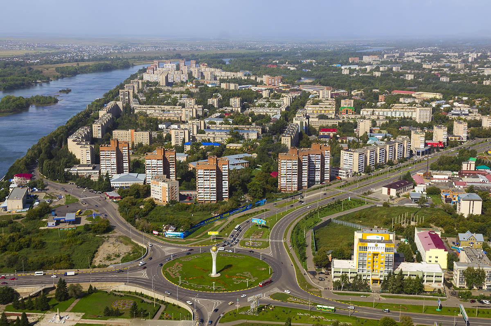
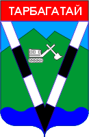
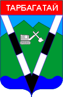

Область подразделяется на 15 районов и 6 городов областного подчинxения. Областным центром является город - Усть-Каменогорск.
Абайский район с центром в селе Караул.
Аягозский район с центром в городе Аягоз.
Бескарагайский район с центром в селе Бескарагай.
Бородулихинский район с центром в селе Бородулиха.
Глубоковский район с центром в поселке Глубокое.
Жарминский район с центром в селе Калбатау.
Зайсанский район с центром в городе Зайсан.
Зыряновский район с центром в городе Зыряновск.
Катон-Карагайский район с центром в селе Улькен-Нарын.
Кокпектинский район с центром в селе Кокпекты.
Куршимский район с центром в селе Куршим.
Тарбагатайский район с центром в селе Аксуат.
Уланский район с центром в поселке Касыма Кайсенова.
Урджарский район с центром в селе Урджар.
Шемонаихинский район с центром в город Шемонаиха.
Города: Усть-Каменогорск, Семей, Риддер, Курчатов.
 
